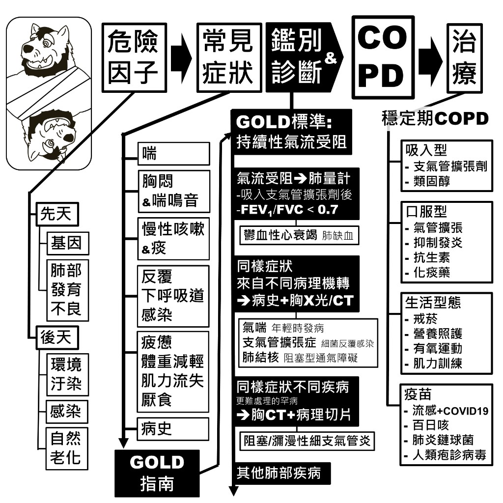
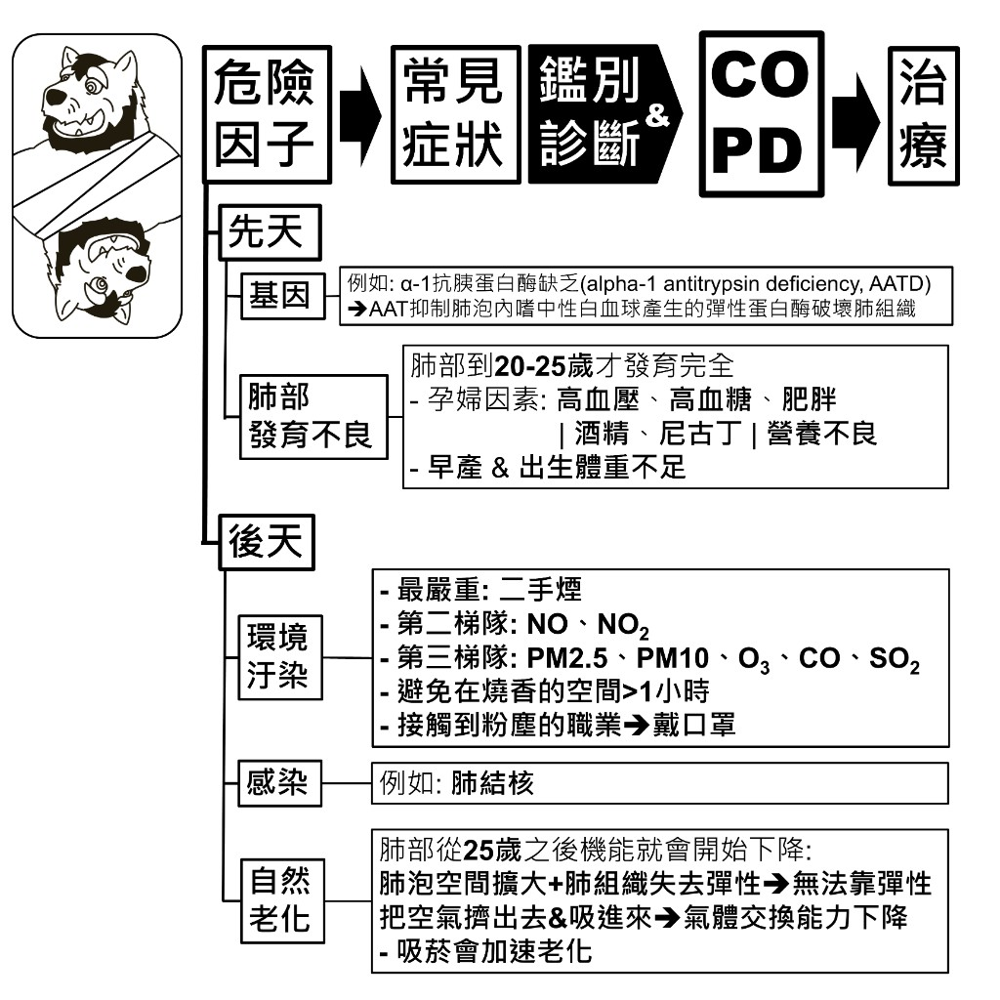
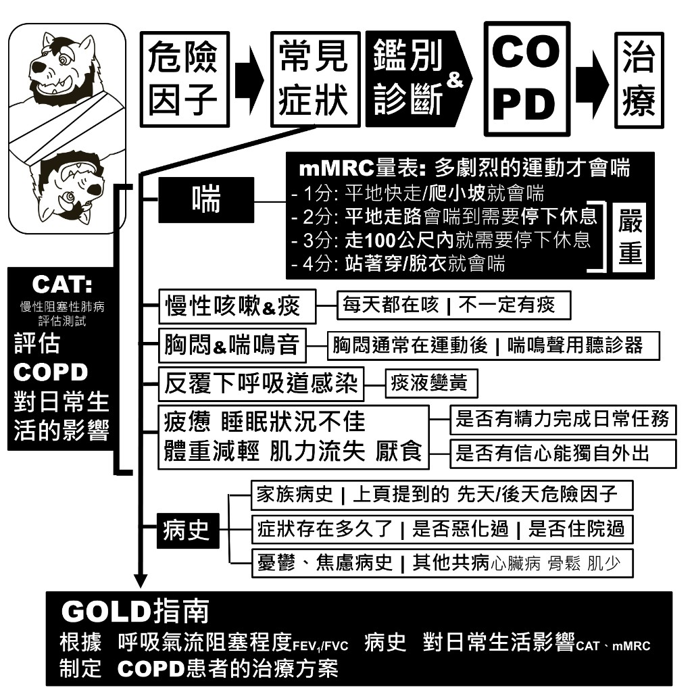
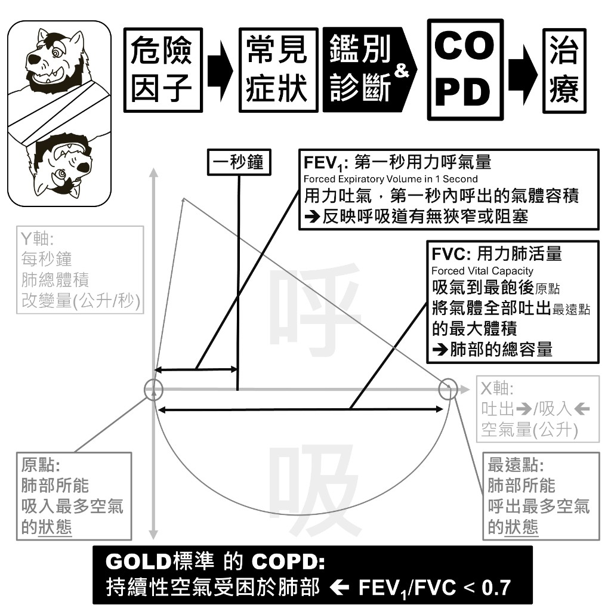
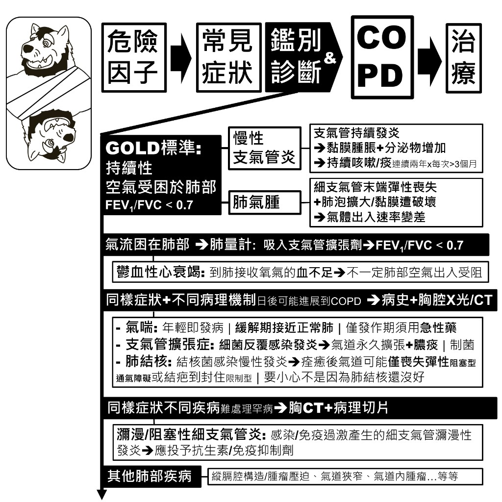
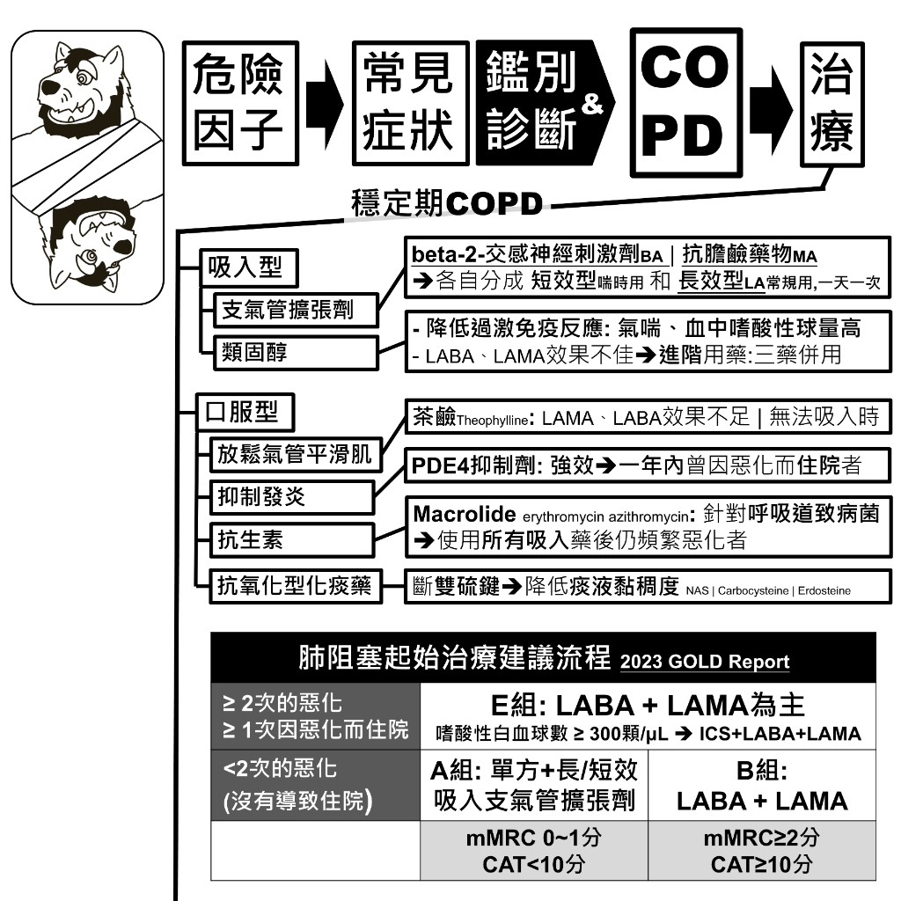

總覽
COPD 的路徑是：危險因子 → 常見症狀 → 鑑別與診斷 → 確認 COPD → 治療。診斷的核心是吸入支氣管擴張劑後，肺量計 FEV₁/FVC < 0.7。

危險因子
危險因子分成先天與後天。後天裡最嚴重的是二手煙；吸菸也會加速肺部老化。

先天
- 基因：α-1 抗胰蛋白酶缺乏（AATD）。AAT 本來會抑制肺泡內嗜中性白血球產生的彈性蛋白酶；缺乏時肺組織較容易被破壞。
- 肺部發育不良：肺部到 20–25 歲才發育完全。孕婦因素包括高血壓、高血糖、肥胖、酒精、尼古丁、營養不良；早產與出生體重不足也會影響。
後天
- 環境汙染：最嚴重是二手煙；其次是 NO、NO₂；再來是 PM2.5、PM10、O₃、CO、SO₂。避免在燒香空間待超過 1 小時；接觸粉塵的職業要戴口罩。
- 感染：例如肺結核。
- 自然老化：肺部從 25 歲之後機能開始下降。肺泡空間擴大、肺組織失去彈性，無法靠彈性把空氣擠出與吸入，氣體交換能力下降。吸菸會加速老化。
常見症狀
GOLD 指南會綜合氣流阻塞程度（FEV₁/FVC）、病史，以及對日常生活的影響（CAT、mMRC）來訂治療方案。

喘：mMRC 量表
看「多劇烈的運動才會喘」。分數愈高，嚴重度愈高。
| 分數 | 表現 |
|---|---|
| 1 分 | 平地快走／爬小坡就會喘 |
| 2 分 | 平地走路會喘到需要停下休息 |
| 3 分 | 走到 100 公尺內就需要停下休息 |
| 4 分 | 站著穿／脫衣就會喘 |
其他常見表現
- 慢性咳嗽與痰：每天都在咳，不一定有痰
- 胸悶與喘鳴音：胸悶通常在運動後；喘鳴聲用聽診器聽
- 反覆下呼吸道感染：痰液變黃
- 疲憊、睡眠不佳、體重減輕、肌力流失、厭食：看是否還有精力完成日常任務、是否有信心能獨外出行
CAT：COPD 對日常生活的影響
CAT（慢性阻塞性肺病評估測試）用來評估 COPD 對日常生活的影響，後面起始治療分組會用到。
病史要問什麼
- 家族病史，以及先天／後天危險因子
- 症狀存在多久、是否惡化過、是否住院過
- 憂鬱、焦慮病史；其他共病如心臟病、骨質疏鬆、肌少症
肺量計與 GOLD 標準
GOLD 把 COPD 定義成持續性空氣受阻於肺部：吸入支氣管擴張劑後，FEV₁/FVC < 0.7。

| 指標 | 全名 | 意思 |
|---|---|---|
| FEV₁ | 第一秒用力呼氣量 Forced Expiratory Volume in 1 Second |
用力吐氣，第一秒內呼出的氣體容積。反映呼吸道有無狹窄或阻塞。 |
| FVC | 用力肺活量 Forced Vital Capacity |
吸氣到最飽後，把氣體全部吐到最遠點的最大體積。反映肺部總容量。 |
鑑別診斷
同樣會喘、咳嗽，不一定是 COPD。先用肺量計確認氣流是否真的受阻，再用病史與影像排除其他疾病。

GOLD 標準底下的兩種病理
- 慢性支氣管炎：支氣管持續發炎 → 黏膜腫脹、分泌物增加 → 持續咳嗽／痰連續兩年、每次超過 3 個月
- 肺氣腫：細支氣管末端彈性喪失，加上肺泡擴大、黏膜遭破壞 → 氣體出入速率變差
氣流困在肺部時，肺量計：吸入支氣管擴張劑後 FEV₁/FVC < 0.7。
不一定是肺部空氣出入受阻
鬱血性心衰竭：到肺接收氧氣的血不足，不一定肺部空氣出入受阻。
同樣症狀、不同機轉，日後可能進展到 COPD
需要病史＋胸腔 X 光／CT 來分辨：
- 氣喘：年輕即發病；緩解期接近正常肺；僅發作期須用救急藥
- 支氣管擴張症：細菌反覆感染發炎 → 氣道永久擴張、膿痰；重點是制菌
- 肺結核：結核菌感染慢性發炎。痊癒後氣道可能喪失彈性（阻塞型通氣障礙），或結疤封住（限制型）。要先確認不是肺結核還沒好。
同樣症狀、較難處理的罕病
需要胸 CT＋病理切片。
- 瀰漫／阻塞性細支氣管炎：感染或免疫過激造成細支氣管瀰漫性發炎 → 應投予抗生素／免疫抑制劑
- 其他肺部疾病：縱膈腔構造或腫瘤壓迫、氣道狹窄、氣道內腫瘤等
穩定期治療：藥物
穩定期藥物分成吸入型與口服型。起始用藥依 2023 GOLD Report，用惡化次數、住院、mMRC 與 CAT 分組。

吸入型
- 支氣管擴張劑：β₂ 交感神經刺激劑（BA）｜抗膽鹼藥物（MA）。各自分成短效型（喘時用）與長效型（LA，常規用，一天一次）。
- 類固醇：降低過激免疫反應，適用於氣喘、血中嗜酸性球偏高。LABA、LAMA 效果不佳時，進階用藥為三藥併用。
口服型
- 放鬆氣管平滑肌：茶鹼（Theophylline）。LAMA、LABA 效果不足，或無法吸入時使用。
- 抑制發炎：PDE4 抑制劑。強效，用於一年內曾因惡化而住院者。
- 抗生素：巨環類（erythromycin、azithromycin），針對呼吸道致病菌。使用所有吸入藥後仍頻繁惡化者。
- 抗氧化型化痰藥：斷雙硫鍵、降低痰液黏稠度。例如 NASSI、Carbocysteine、Erdosteine。
起始治療建議（2023 GOLD Report）
| 惡化史 | 分組條件 | 建議 |
|---|---|---|
| ≥ 2 次惡化 或 ≥ 1 次因惡化住院 |
E 組 | LABA ＋ LAMA 為主。 嗜酸性白血球 ≥ 300 顆/μL → ICS ＋ LABA ＋ LAMA |
| < 2 次惡化 （沒有導致住院） |
A 組 mMRC 0–1 分、CAT < 10 |
單方長／短效吸入支氣管擴張劑 |
| B 組 mMRC ≥ 2 分、CAT ≥ 10 |
LABA ＋ LAMA |
穩定期治療：生活型態與疫苗
藥物之外，戒菸、營養、運動與疫苗都能減少惡化、維持體能。

生活型態
- 戒菸：尼古丁替代治療是常見的戒菸輔助方式，劑型包括口香糖、吸入劑、鼻噴劑、皮貼片、舌下錠、口服錠劑。是否適用、如何使用，因人而異，須由醫師評估。
- 營養照護：疲勞、呼吸困難會讓人無法自行調理食物；慢性咳痰改變味覺、橫膈膜擠壓容易有飽足感；憂鬱與藥物副作用（噁心、消化不良）也會讓人吃不下。需要監控體重，必要時用口服營養品、蛋白質、維他命 D。
- 有氧運動：做到稍微有點呼吸困難。
- 肌力訓練：每週 > 2 次。
疫苗
- 流感 ＋ COVID-19
- 百日咳
- 肺炎鏈球菌
- 人類疱疹病毒